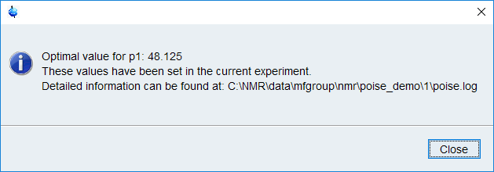

Running an optimisation¶
Assuming you or someone else has already created a routine (see Setting up a Routine if not), this page will show you how to run the optimisation.
We’ll use the same p1 calibration routine that we described on that page, but the principles apply equally to all routines.
The first thing to do is to set up the NMR experiment.
Use edc or new to create a new proton pulse-acquire experiment.
You should use the pulse programme zg (not zg30 or zg60!).
Set the other experimental parameters, such as the spectral width SW, relaxation delay d1, etc. as desired for your compound of interest.
All these steps can in principle be done most easily by loading a parameter set (rpar).
On Bruker systems, there should already be a builtin PROTON parameter set.
After loading this parameter set you will have to run getprosol, then change the pulse programme to zg.
Alternatively, there might be a different parameter set that has been set up by a member of the NMR staff for simple proton spectra.
As long as you make sure the pulse programme is zg the optimisation will work fine.
Note
Apart from the pulse programme, basically every other parameter can be set to whatever you like.
However, to reduce the overall time taken, it’s generally a good idea to try to make each experiment as short as possible.
In this case, even with very dilute samples, 1 scan (NS=1) will suffice.
We find that dummy scans are not needed to obtain accurate results, so it is permissible to set DS=0 (although see next paragraph for a caveat).
You could cut this even further by lowering TD to 8192 (for a given SW, this translates to a shorter acquisition time AQ).
For routine usage we recommend using at least 1 dummy scan. This (p1cal) is the only optimisation example in which we have used 0 dummy scans.
Skipping dummy scans altogether can lead to inaccuracies in the cost functions (as the system has not reached a steady state).
Lock, shim, and tune as usual (if you haven’t already). Once that’s done, simply enter into the TopSpin command line:
poise p1cal
Sit back and watch it run! You should get a result in 1–2 minutes.
The best value(s) will automatically be stored in the corresponding parameter so that any subsequent acquisition will use the optimised parameters. Don’t forget that for this particular optimisation, you will have to divide the optimised value by 4 to get back the 90° pulse.
Parsing the log¶
If you are interested in analysing data from (possibly multiple) optimisation runs, all information is logged in a poise.log file.
This log file is stored inside the expno folder (the post-optimisation popup also tells you where it can be found — see above for an example).
Some of the key information inside the poise.log file can be extracted in Python:
>>> from nmrpoise import parse_log
>>> parse_log("C:/NMR/data/mfgroup/nmr/poise_demo/1")
routine initial param lb ub tol algorithm costfn auprog optimum fbest nfev time
0 p1cal 48.0 [p1] 40.0 56.0 0.2 nm minabsint poise_1d 48.125 6.849146e+06 10 77
parse_log returns a pandas.DataFrame object which contains most of the information in the log file.
However, this object does not include details of individual cost function evaluations (even though these are fully logged).
If you want to analyse that data, you will have to write your own function!
The full documentation for parse_log (which really doesn’t say much more than the previous example) is as follows:
- nmrpoise.parse_log(fname='.')¶
Parse a poise.log file.
- Parameters
- fname
Pathor str or int, optional Path to poise.log file, or the folder containing it (this would be the TopSpin EXPNO folder). If an int is passed, it is interpreted as the string “./<fname>” (i.e. expno X in the current working directory). If not specified, defaults to the current working directory.
- fname
- Returns
- log_df
DataFrame DataFrame with rows corresponding to optimisations which successfully terminated. The time taken is given in seconds.
- log_df
Errors¶
POISE tries its best to exit gracefully from errors, and often you won’t need to care about any of them.
However, if something does go wrong during an optimisation, errors will be logged to the two files poise_err_frontend.log and poise_err_backend.log, depending on which script runs into an error.
These files reside in the same folder as poise.log, i.e. the “expno folder”.
We welcome bug reports — please submit an issue on GitHub or drop us an email (addresses can be found on the paper).